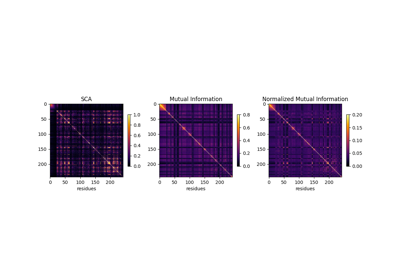

Advanced usage of cocoatree¶


Mutual information versus SCA co-evolution metrics
Mutual information versus SCA co-evolution metrics

Perform full SCA analysis on the S1A serine protease dataset
Perform full SCA analysis on the S1A serine protease dataset